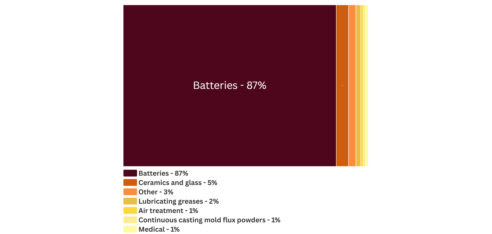
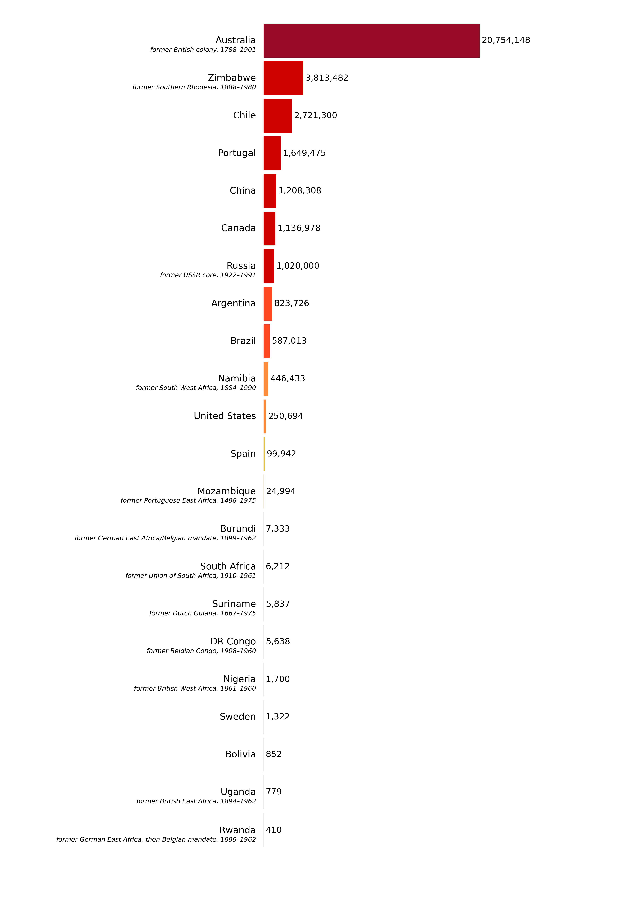

Lithium is an alkali metal. These metals are highly reactive in air at standard temperature and pressure.
Lithium-containing minerals are embedded in an igneous rock called pegmatite.
Pegmatite is an ore that can host spodumene, petalite, and other minerals from which elemental lithium can be recovered. [1][2]
Where was lithium discovered?
Lithium was discovered in 1818 in Sweden.
In 1855, Robert Bunsen and Augustus Matthiessen at the University of Heidelberg in Germany,
proved that lithium metal could be recovered in bulk amounts from brines via electrolysis.
Their work provided the foundation for commercial-scale lithium refining which also began in Germany in 1923.[3][4][5]
Screenshot via Google Earth
What is lithium used for?
What industries use lithium ?
Data from USGS National Minerals Information Center 2025
How much lithium has been mined?
Cumulative Lithium Mined by Country in Metric Tons
Data from USGS Mineral Commodity Reports 1938-2019
*Data Warning: Production data [MT] reported under former states were manually reassigned to modern territories to the best of the authors’ ability. Some national averages may be overinflated due to limited granularity on where within the former state the material was originally mined.
How is Lithium mined?
Greenbushes Mine, Australia
Greenbushes Mine is the largest lithium hard-rock mining site to date, located in south-west Australia. Operations began producing tin in 1888. Since 1983, the mine has developed into a leading producer of lithium ore. Today, Greenbushes supplies 20% of the world's lithium by mining and exporting spodumene concentrates of technical and chemical grade. The largest importer of Australian lithium concentrate in 2023 was China, which imported 1,387 MT. South Korea was second, importing 9 MT. [6][7][8][9][10]

Process Diagram

SQM Salar, Chile
SQM Salar is a lithium brine mine that started producing lithium carbonate from the Atacama salt flats of northern Chile in 1997. These salt flats are part of what's been deemed the “Lithium Triangle” (term coined in 2015), where 60% of the world's lithium reserves occur. In the last 15 years, the groundwater has receded by over 10 meters. The largest importer of Chilean lithium carbonate is China, which imported 89,623 MT in 2023. South Korea was second, importing 23,180 MT. [11][12][13][14][15][16][17][18][19]
Process Diagram

Arcadia Lithium, Mine Zimbabwe
The Arcadia Lithium Mine is the largest in Zimbabwe, where Africa's largest lithium deposits occur. This site began to be mined in 2021. The mine produces petalite and spodumene concentrates that are exported from the Beira port in Mozambique. The process by which the concentrates are produced is like the Greenbushes Project in Australia. [20] The Arcadia open mine pits are relatively shallow in comparison to those at Greenbushes:

Arcadia Lithium, Mine Zimbabwe
Mining operations for lithium in Zimbabwe are in the exploratory phase. Most of these projects are owned by Chinese corporations. This includes the Arcadia Lithium Mine, which was purchased in 2021 for $422 million in 2021. By 2027, Zimbabwe intends to ban the export of unrefined lithium concentrate to encourage the development of local industry. Lithium carbonate and lithium hydroxide are considered as refined products and will remain exportable. [21][22][23][24]